Econometrics I
TA Christian Alemán
Session 6: Friday 25, February 2022
Activity 1: Hetoskedasticity
Simulating Hetoskedasticity
1.1: With Normal Errors:
Consider the model
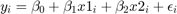
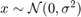 and 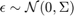
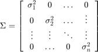
% Housekeeping clear all close all clc % Set the seed rng(123) % Parameters par.beta0 = 1; % Intercept par.beta1 = 2; % Slope par.n = 200; % Simulate the Data Generating process k = 3; vars.x = randn(par.n,k-1); vars.eho = (2) .* randn(par.n,1); % heteroscedastic errors vars.ehe = (1+vars.x(:,k-1)) .* randn(par.n,1); % heteroscedastic errors vars.y = par.beta0 + par.beta1.*vars.x(:,1)+ par.beta1.*vars.x(:,2) + vars.ehe;
Plot our conditional residuals
figure(1) hold on plot(10+vars.x(:,k-1),vars.eho,'ko','MarkerFaceColor','k') yline(0) xlabel('$z$','interpreter','latex','Fontsize',16) ylabel('$\epsilon$','interpreter','latex','FontSize',16) title('Homoscedasticity') figure(2) hold on plot(10+vars.x(:,k-1),vars.ehe,'ko','MarkerFaceColor','k') yline(0) xlabel('$z$','interpreter','latex','Fontsize',16) ylabel('$\epsilon$','interpreter','latex','Fontsize',16) title('Heteroscedasticity') % Estimate OLS [beta,sigma,e,se,se_rob] = my_ols(vars.y,[ones(par.n,1),vars.x]); t=table(beta,se,se_rob); disp(t)
beta se se_rob
______ _______ _______
1.2525 0.10352 0.10418
2.2279 0.11922 0.11104
2.2043 0.10046 0.14658
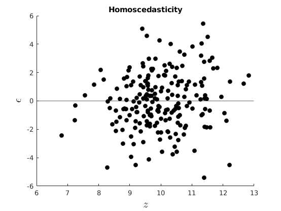 
Visual Inspection
figure(3) hold on plot(vars.x,vars.ehe,'ko','MarkerFaceColor','k') yline(0) xlabel('$x$','interpreter','latex','Fontsize',16) ylabel('$\epsilon$','interpreter','latex','Fontsize',16) title('Visual Inspection')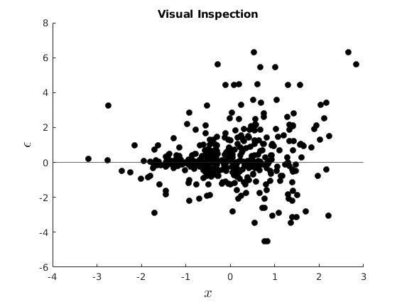
White Test
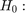 Homoscedasticity
[value, pvalue] = my_white(e,[ones(par.n,1),vars.x]); t = table(pvalue); disp(t) if pvalue<0.05 disp('Reject Homoscedasticity') else disp('Cannot Reject Homoscedasticity') end
pvalue
__________
9.3292e-10
Reject Homoscedasticity
Estimate GLS
opt.het = 1; % Heteroskedasticity [beta_gls,e,se_gls] = my_gls(vars.y,[ones(par.n,1),vars.x],opt); betas_1 = [beta(2);NaN;beta_gls(2)]; method = {'OLS';'E-White';'FGLS'}; s_err = [se(2);se_rob(2);se_gls(2)]; t = table(method,betas_1,s_err); disp(t)
Lets Compute Bootstrap SE
par.B = 1000;% par.K = k; hbeta_sample =NaN(par.B,par.K); for i = 1:par.B rng(i) I_sample = ceil(par.n*rand(par.n,1)); ysample = vars.y(I_sample); xsample = vars.x(I_sample,:); hbeta_sample(i,:) = ([ones(par.n,1),xsample]\ysample)'; end diff = hbeta_sample-repmat(beta',par.B,1); bootVCV = diff'*diff/par.B; vars.SEbeta_hat_boot = sqrt(diag(bootVCV)); disp('Results Using Our Functions') betas_1 = [beta(2);NaN;beta_gls(2);mean(hbeta_sample(:,2))]; method = {'OLS';'E-White';'FGLS';'Bootstrap'}; s_err = [se(2);se_rob(2);se_gls(2);vars.SEbeta_hat_boot(2)]; t = table(method,betas_1,s_err); disp(t) % Lets compare with the matlab inbuilt functions: [~,mse_rob,~] = hac(vars.x,vars.y,'type','HC','display','off'); [coeff,se_gls] = fgls(vars.x,vars.y,'innovMdl','HC0','display','off'); m1 = fitlm(vars.x,vars.y); se_ols = m1.Coefficients.SE; coeff_ols = m1.Coefficients.Estimate; disp('Results Using Inbuilt Matlab') betas_1 = [coeff_ols(2);NaN;coeff(2)]; method = {'OLS';'E-White';'FGLS'}; s_err = [se_ols(2);mse_rob(2);se_gls(2)]; t = table(method,betas_1,s_err); disp(t)
Results Using Our Functions
method betas_1 s_err
_____________ _______ _________
{'OLS' } 2.2279 0.11922
{'E-White' } NaN 0.11104
{'FGLS' } 2.2286 0.0060634
{'Bootstrap'} 2.2264 0.11177
Results Using Inbuilt Matlab
method betas_1 s_err
___________ _______ _________
{'OLS' } 2.2279 0.12013
{'E-White'} NaN 0.11104
{'FGLS' } 2.2286 0.0061093
1.2: With Uniform Errors:
Consider the model
and 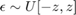
Estimate OLS
par.ub = 100; par.lb = 0; aux_z = rand(par.n,1).*7; vars.ehe = ((20+10*aux_z)).*(rand(par.n,1)-0.5); vars.x(:,1) = unifrnd(par.lb,par.ub,par.n,1); vars.x(:,2) = aux_z; vars.y = par.beta0 +par.beta1.*vars.x(:,1) +par.beta1.*vars.x(:,2) +vars.ehe; k = 3; %vars.x = randn(par.n,k-1); vars.ehe = (1+vars.x(:,k-1)) .*(rand(par.n,1)-0.5); % heteroscedastic errors vars.y = par.beta0 + par.beta1.*vars.x(:,1)+ par.beta1.*vars.x(:,2) + vars.ehe; [beta,sigma,e,se,se_rob] = my_ols(vars.y,[ones(par.n,1),vars.x]);
Visual Inspection
figure(4) hold on plot(vars.x(:,2),vars.ehe,'ko','MarkerFaceColor','k') yline(0) xlabel('$x$','interpreter','latex','Fontsize',16) ylabel('$\epsilon$','interpreter','latex','Fontsize',16) title('Visual Inspection')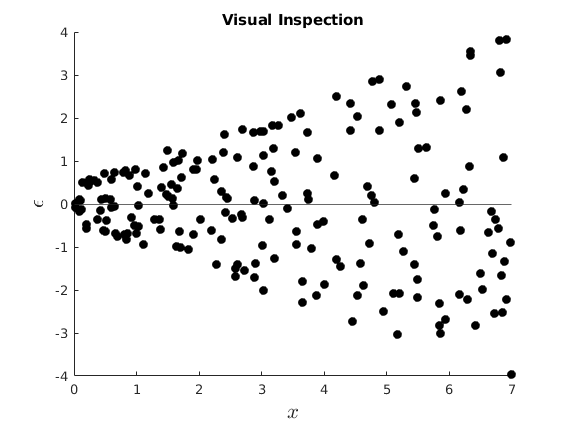
White Test
Homoscedasticity
[value, pvalue] = my_white(e,[ones(par.n,1),vars.x]); t = table(pvalue); disp(t) if pvalue<0.05 disp('Reject Homoscedasticity') else disp('Cannot Reject Homoscedasticity') end
pvalue
__________
8.8041e-14
Reject Homoscedasticity
Estimate GLS and Bootstrap SE
[beta_gls,~,se_gls] = my_gls(vars.y,[ones(par.n,1),vars.x],opt); par.B = 1000;% par.K = k; hbeta_sample =NaN(par.B,par.K); for i = 1:par.B rng(i) I_sample = ceil(par.n*rand(par.n,1)); ysample = vars.y(I_sample); xsample = vars.x(I_sample,:); hbeta_sample(i,:) = ([ones(par.n,1),xsample]\ysample)'; end diff = hbeta_sample-repmat(beta',par.B,1); bootVCV = diff'*diff/par.B; vars.SEbeta_hat_boot = sqrt(diag(bootVCV)); disp('Results Using our own functions') betas_1 = [beta(2);NaN;beta_gls(2);mean(hbeta_sample(:,2))]; method = {'OLS';'E-White';'FGLS';'Bootstrap'}; s_err = [se(2);se_rob(2);se_gls(2);vars.SEbeta_hat_boot(2)]; t = table(method,betas_1,s_err); disp(t) % Lets compare with the matlab inbuilt functions: [~,mse_rob,~] = hac(vars.x,vars.y,'type','HC','display','off'); [coeff,se_gls] = fgls(vars.x,vars.y,'innovMdl','HC0','display','off'); m1 = fitlm(vars.x,vars.y); se_ols = m1.Coefficients.SE; coeff_ols = m1.Coefficients.Estimate; disp('Results Using Inbuilt Matlab') betas_1 = [coeff_ols(2);NaN;coeff(2)]; method = {'OLS';'E-White';'FGLS'}; s_err = [se_ols(2);mse_rob(2);se_gls(2)]; t = table(method,betas_1,s_err); disp(t)
Results Using our own functions
method betas_1 s_err
_____________ _______ __________
{'OLS' } 1.999 0.0035595
{'E-White' } NaN 0.0032256
{'FGLS' } 1.9992 0.00033118
{'Bootstrap'} 1.9992 0.0033158
Results Using Inbuilt Matlab
method betas_1 s_err
___________ _______ _________
{'OLS' } 1.999 0.0035865
{'E-White'} NaN 0.0032256
{'FGLS' } 1.9992 0.0003337
Activity 2: Autocorrelated Errors
Simulating AR(1) errors
Consider the model
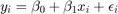
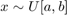 and 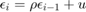
and 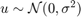
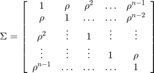
par.rho = 0.9; vars.eau = NaN(par.n,1); vars.eau(1,1) = randn(1,1)/sqrt(1-par.rho^2); % The trend of the AR(1) process for i = 2:par.n rng(12300+i) vars.eau(i,1) = par.rho*vars.eau(i-1,1) + 5*randn(1,1); % end %par.ub = 100; %par.lb = 0; %vars.x = unifrnd(par.lb,par.ub,par.n,1); vars.y = par.beta0 +par.beta1.*vars.x(:,1)+par.beta1.*vars.x(:,2) +vars.eau; [beta,sigma,e,se,~] = my_ols(vars.y,[ones(par.n,1),vars.x]); se_rob=my_newey(e,[ones(par.n,1),vars.x],1);
Visual Inspection
figure(5) hold on plot(e(2:end),e(1:end-1),'ko','MarkerFaceColor','k') yline(0) xlabel('$\epsilon_{t-1}$','interpreter','latex','Fontsize',16) ylabel('$\epsilon_{t}$','interpreter','latex','Fontsize',16) title('Visual Inspection')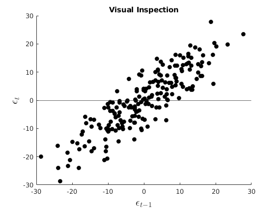
DW Durbin Watson
No Autocorrelation
pvalue = dwtest(e,[ones(par.n,1),vars.x]); t = table(pvalue); disp(t) if pvalue<0.05 disp('Reject Null: there is autocorrelation') else disp('Cannot Reject Null; There is no autocorrelation') end
pvalue
__________
1.3004e-64
Reject Null: there is autocorrelation
Estimate GLS and Bootstrap SE
opt.het = 0; [beta_gls,e,se_gls] = my_gls(vars.y,[ones(par.n,1),vars.x],opt); par.B = 1000;% par.K = k; hbeta_sample =NaN(par.B,par.K); for i = 1:par.B rng(i) I_sample = ceil(par.n*rand(par.n,1)); ysample = vars.y(I_sample); xsample = vars.x(I_sample,:); hbeta_sample(i,:) = ([ones(par.n,1),xsample]\ysample)'; end diff = hbeta_sample-repmat(beta',par.B,1); bootVCV = diff'*diff/par.B; vars.SEbeta_hat_boot = sqrt(diag(bootVCV)); disp('Using our functions') betas_1 = [beta(2);NaN;beta_gls(2);mean(hbeta_sample(:,2))]; method = {'OLS';'Newey West';'FGLS';'Bootstrap'}; s_err = [se(2);se_rob(2);se_gls(2);vars.SEbeta_hat_boot(2)]; t = table(method,betas_1,s_err); disp(t) % Lets compare with the matlab inbuilt functions: [~,mse_rob,~] = hac(vars.x,vars.y,'type','HAC','bandwidth',floor(4*(par.n/100)^(2/9))+1,'weights','BT','display','off'); [coeff,se_gls] = fgls(vars.x,vars.y,'display','off'); m1 = fitlm(vars.x,vars.y); se_ols = m1.Coefficients.SE; coeff_ols = m1.Coefficients.Estimate; disp('Results Using Inbuilt Matlab') betas_1 = [coeff_ols(2);NaN;coeff(2)]; method = {'OLS';'Newey West';'FGLS'}; s_err = [se_ols(2);mse_rob(2);se_gls(2)]; t = table(method,betas_1,s_err); disp(t)
End of Code
%--------------------------------------------------------- function [beta,e,se] = my_gls(y,x,opt) %{ This function computes GLS estimates and its standard errors inputs: y dependent var x independent vars outputs: beta OLS coefficients sigma Estimator or variance of error e Backed residuals se Standard Errors %} n = size(x,1); if opt.het==1 % Tradicional heteroskedasticity [~,~,e_ols] = my_ols(y, x); e_ols = e_ols.^2; %C = diag(1./ sqrt(e_ols)); C = chol(inv(diag(e_ols))); [beta,~,e,se] = my_ols(C*y, C*x); else % AR(1) Errors [~,~,e_ols] = my_ols(y, x); % estimation of AR(1) coefficient ey = e_ols(2:n); ex = e_ols(1:n-1); rho = ex\ey; % Estimating the autocorrelation coeff e_auto = ey-ex*rho; var_e = var(e_auto); %factor = eye(n).*var_e./(1-rho^2); % Cancels out sigma_e = eye(n); for i = 1:n for j = i+1:n sigma_e(i,j) = rho^(j-i); sigma_e(j,i) = sigma_e(i,j); end end %sigma_e = factor.*sigma_e; C = chol(inv(sigma_e)); [beta,~,e,se] = my_ols(C*y, C*x); end % end if end %--------------------------------------------------------- function [beta,sigma,e,se,se_rob] = my_ols(y,x) %{ This function computes OLS estiamtes and its standard errors inputs: y dependent var x independent vars outputs: beta OLS coefficients sigma Estimator or variance of error e Backed residuals se Standard Errors %} [n,k] = size(x); beta = x\y; sigma = (y-x*beta)'*(y-x*beta)/(n-rank(x)); e = y - x*beta; VCV = (e'*e)/n*inv(x'*x); se = sqrt(diag(VCV)); % Eicker-White se aux = x.*(kron(e.^2,ones(1,k))); VCV_white = inv(x'*x) * x'*aux* inv(x'*x); se_rob = sqrt(diag(VCV_white)); end %--------------------------------------------------------- function [value, pvalue] = my_white(e, x) %{ White's test for heteroscedasticity Input: e: Residuals x: Independent Variables %} n = size(e,1); k = size(x,2) - 1; [~,~,e_ols] =my_ols(e.^2,x); TSS = e.^2 - mean(e.^2); TSS = TSS' * TSS; ESS = e_ols' * e_ols; rsq = 1 - ESS / TSS; % the r-square auxiliary value = n*rsq; % Statistic pvalue = 1 - chi2cdf(value,k); % Value end function [se]= my_newey(e,x,lag) %{ % Compute Newey West Standard errors Input: e: residuals x: Matrix of regressors lag: number of langs %} [N,k] = size(x); VT = 0; % This I will fill on a loop, for s = 0:lag omega_s = 1-s/(lag+1); for t = s+1:N if (s==0) VT = VT+e(t)^2*x(t,:)'*x(t,:); else % This calculates the off-diagonal terms VT = VT+omega_s*e(t)*e(t-s)*(x(t,:)'*x(t-s,:)+x(t-s,:)'*x(t,:)); end end end VT = (1/(N-k)) .*VT; se = sqrt(diag(N.*(inv(x'*x)*VT*inv(x'*x)))); end
method betas_1 s_err
___________ _______ _________
{'OLS' } 2.2279 0.11922
{'E-White'} NaN 0.11104
{'FGLS' } 2.2286 0.0060634